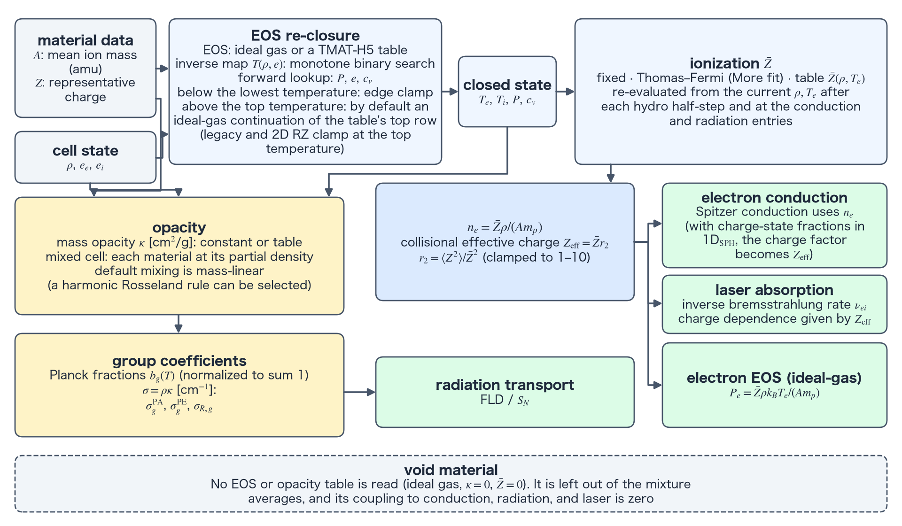

EOS, opacity and ionization reference
TENRYU's material closure connects the material composition, the equation of state (EOS), the mean ionization, and the opacity to one cell state. The EOS closes the temperature, pressure, and specific heat, and the ionization model supplies the electron number density. The electron density feeds the conduction and laser physics, and the opacity, together with the Planck fractions, becomes the group coefficients used by radiation transport. This page describes the physical mechanism of the whole material closure, the data flow, where the closures are called, and the void materials. The details of the EOS, the ionization, and the opacity are split over the three pages below.
Equation of state
The ideal-gas and TMAT-H5 tabulated EOS, the temperature recovery by the inverse map, and the treatment of energies above the table.
Ionization and collisional effective charge
The mean-ionization models, the collisional effective charge, and sequential stripping.
Opacity
Constant and tabulated opacities, the mixing rules of mixed cells, the Planck fractions, and the tail deficit.
Physical mechanism
The evolution operators advance conserved quantities; everything else needed by the physics — \(P\), \(T\), \(c_v\), \(\bar Z\), and \(\kappa\) — must be reconstructed from material closures at the cell state. High-energy-density matter can span an enormous range within one shot, from cold solid to multi-keV plasma, while opacity changes by orders of magnitude. The analytic-versus-tabulated choice is therefore a per-material choice between clarity and fidelity.
The analytic baseline is a two-temperature ideal gas with independent electron and ion branches, whereas real target materials use TMAT-H5 tables of \(P\), \(e\), and \(c_v\) (TMAT-H5 is TENRYU's tabulated-material format and its HDF5 container, specified in the repository's docs/TMAT_H5_SPEC.md; see the terms section). The inverse map \(T(\rho,e)\) is the workhorse because hydro closes energy, not temperature: every re-closure performs a monotone binary search of the energy row at a fixed density bracket, then interpolates in \(\log T\). The GPU path is deliberately Newton-free — robust, deterministic, and free of a convergence branch. An energy below the table's lowest temperature clamps to the end temperature; an energy above the highest temperature is closed by an ideal-gas extension rather than clamped in the default 1D closure (see Ideal-gas and TMAT equations of state).
Mean ionization is the key coupling quantity. The mean ionization \(\bar Z\) sets \(n_e=\bar Z\rho/(A m_p)\), and \(n_e\) enters Spitzer conduction, inverse-bremsstrahlung (IB) collision rates, the electron EOS branch, and radiation–matter coupling. TENRYU can use fixed \(\bar Z=Z\), the Thomas–Fermi More fit, or tabular \(\bar Z(\rho,T_e)\); dynamic models are reevaluated at the conduction and radiation entrances so each operator sees ionization consistent with its starting state. Collision rates weight \(Z^2\), not \(Z\): when charge-state fractions are available, \(r_2=\langle Z^2\rangle/\bar Z^2\) upgrades the Spitzer and SNB (Schurtz–Nicolaï–Busquet nonlocal electron conduction — see Conduction) charge factors to the collisional effective charge \(Z_{\rm eff}=\bar Zr_2\).
Transport needs the Rosseland mean, a flux-weighted mean of \(1/\kappa_\nu\) (a harmonic mean of the opacity). Radiation flows through all frequency channels simultaneously — in parallel — so, exactly as with parallel resistors, the easiest path dominates: transparent spectral windows control the Rosseland mean. Emission and absorption instead need Planck means, linear emission-weighted means of \(\kappa_\nu\) in which strong spectral lines dominate. The mixed-cell rule "harmonic_mass_R" follows the same physics: Planck opacities add mass-linearly as absorbers, while Rosseland opacities combine harmonically through transparent paths. Planck fractions \(b_g(T)\) close the finite group structure by summing to one, and the tail that falls outside the groups is diagnosed as a deficit (Groups, Planck fraction, and tail deficit). An IONMIX table (the .cn4 material-table format of the collisional-radiative code Ionmix) without an emission-opacity block is taken as an LTE (local-thermodynamic-equilibrium) table, with a warning and \(\kappa^{PE}=\kappa^{PA}\).
From material data to transport coefficients
Material.A is the mean mass per ion in amu, while Material.Z is the mean atomic number or representative charge. For one material, \(n_i=\rho/(A m_p)\) and \(n_e=\bar Z n_i\), where \(m_p=1.6726\times10^{-24}\) g is the proton mass. TENRYU deliberately treats the atomic mass unit as \(m_p\), a convention that fixes its set of physical constants; the ≈0.73% offset from the true amu is absorbed into the material's effective \(A\). For a compound, \(A\) is the number-fraction mean ion mass, not the molecular mass: equiatomic CH uses 6.5 and CD uses 7. This convention aligns the EOS and opacity density axes with downstream particle-density calculations.
The EOS closes pressure, temperature, and heat capacity; ionization supplies \(\bar Z\) (Figure A). The resulting \(n_e\) drives electron conduction and inverse-bremsstrahlung laser absorption. On a separate branch, opacity combines with temperature-dependent Planck fractions to produce group coefficients for flux-limited diffusion (FLD) or discrete ordinates method (\(S_N\)) radiation transport. All branches share the material state but remain independently testable.
- \(A\) — the number-fraction mean ion mass: CH uses 6.5 and CD uses 7. This density-axis convention keeps EOS, opacity, and particle densities consistent.
- \(n_e=\bar Z\rho/(A m_p)\) — the electron density passed from composition and ionization into collisional transport and coupling coefficients.
- \(\kappa\) versus \(\sigma=\rho\kappa\) — mass opacity is stored in cm²/g; transport consumes the distinct length opacity in cm⁻¹.
cv_e_override— a volumetric heat capacity in erg/(cm³·eV). It feeds the same constant to the Fleck factor (the linearization coefficient that couples radiation emission and absorption implicitly — see FLD) as a verification convention, not as a material-fitting knob.- \(r_2=\langle Z^2\rangle/\bar Z^2\) — clamped to 1–10 before forming the collisional \(Z_{\rm eff}=\bar Zr_2\) (terms). The clamp is a numerical safeguard, not physics: \(r_2\ge1\) holds by construction (it is a variance ratio), and the ceiling of 10 bounds the correction against degenerate or corrupt fraction tables.
- \(10^{-20}\) cm²/g — the floor (see Floors, clamps, and safety guards) applied to each component's Rosseland opacity before the harmonic mean of
"harmonic_mass_R". It sits many orders below any physical opacity and exists solely to keep the harmonic combination finite when a component is exactly zero.

Where the closures are called, step by step
Initialize. Load the material tables, tabulate the configured Python callables and freeze the configuration, and build
PlanckTableon the radiation-group bounds.Re-close after each hydro half-step. Recover \(T\) from the evolved \((\rho,e)\) with the inverse map, then evaluate \(P\) and \(c_v\) forward while reusing the same density bracket.
Enter conduction. Refresh dynamic \(\bar Z\), form \(n_e=\bar Z\rho/(A m_p)\), and evaluate the conductivity coefficients from that entrance state.
Enter radiation. Refresh \(\bar Z\) and \(Z_{\rm eff}\), evaluate \(\kappa_R\), \(\kappa^{PA}\), and \(\kappa^{PE}\) at \((\rho,T_e)\), convert each mass opacity to \(\sigma=\rho\kappa\), and evaluate \(b_g(T_e)\).
Mix material contributions. In mixed cells, combine the material opacities by
Materials.opacity_mix_rule, evaluating each material's table at its partial density; a cell whose dominant material is NLTE takes that material's NLTE coefficients.Apply the safeguards. Raise a non-positive \(c_v\) to a floor (with a single warning when the table is built), clamp table-domain accesses to the end values, and apply the Rosseland opacity floor. In the default 1D closure, an energy above the table's value at its highest temperature is closed by an ideal-gas extension rather than clamped (see Ideal-gas and TMAT equations of state).
Void materials
A void is a material that represents a region without matter, such as the vacuum outside the target, on the grid. A material with is_void=True (a void material) skips EOS and opacity table loading. Its EOS is fixed to an ideal gas, its opacity to kappa_a=kappa_s=0, and its \(Z\) to 0; \(A\) is 1 unless given. A cell whose non-void volume fractions sum to at most \(10^{-12}\) is a void cell, and its cell_is_void mask is set to 1 at initialization. A void material is excluded from the mixed-cell averages \(\bar Z_{\rm eff}\) and \(A_{\rm eff}\) (terms; these are mixture averages — distinct from the collisional \(Z_{\rm eff}=\bar Zr_2\) above), from the EOS averages, and from mass-fraction mixing; its volume fraction only derives the cell_is_void mask. A void cell forces \(\bar Z=0\) and skips the Thomas–Fermi evaluation. In a void cell the thermal conductivity is set to zero, so the cell is adiabatic; the absorption and emission coefficients are set to zero, so radiation and matter exchange no energy; and the electron density is zero, so the laser is neither absorbed nor refracted. The initial \(\rho,T_e,T_i\) of a void cell come from Materials.void_config, not from the deck's Geometry.rho, Te, and Ti.
Namelist controls
The table lists the controls for the material composition and for voids. The keys of the EOS, the ionization, and the opacity are in the namelist section of each page. See the namelist reference for complete validation rules.
| Key | Value/default | Purpose |
|---|---|---|
Material.A, Material.Z | per material | Mean ion mass [amu] and representative nuclear charge. |
Material.is_void | False | Makes the material a void (defined in the section below); no EOS or opacity table is loaded, and it is excluded from the coupling to conduction, radiation, and the laser. |
Materials.void_config | rho, Te, Ti = \(10^{-10}\) g/cm³, \(10^{-3}\) eV, \(10^{-3}\) eV | Initial density and temperatures of void cells. They take precedence over the deck's Geometry.rho, Te, and Ti. |